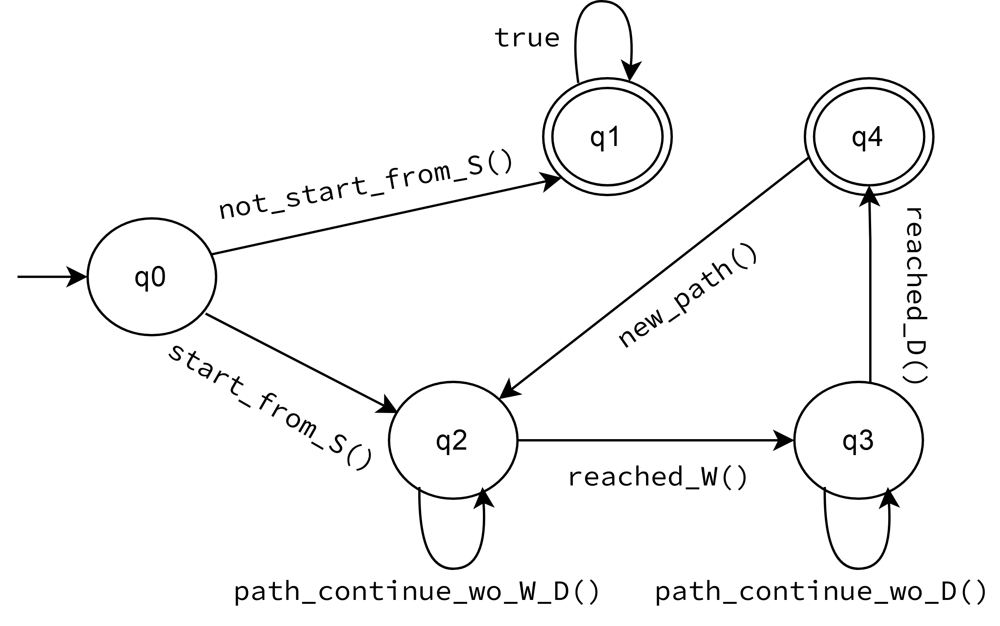
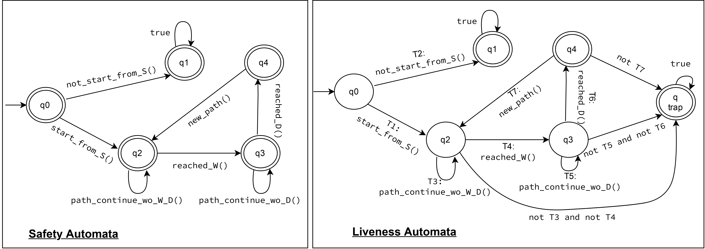

♦ While existing network verification tools focus almost exclusively on different variants of reachability, can we verify liveness properties at scale?
♦ Given a combinational property, i.e., a property that falls under both safety and liveness criteria, can we decompose it to safety-only and liveness-only properties?
♦ Can we verify the latency of modern large-scale networks with packet-level granularity?
Below, we highlight the research conducted by our team to answer these questions.
We argue that the goal of verifying liveness properties is achievable using a top-down function-oriented strategy that rethinks network abstractions with the efficiency of verification in mind.
Contributions:
Our one big switch abstraction is designed to be capable of performing similar computations and is therefore
expressive enough to program a wide range of network functions. Table below lists the
functions of a few common control planes and recent network
abstractions that we re-wrote on top of our abstraction
Below, Figure (a) and (b) show examples for a UDP flood mitigation function which deploys a per-source IP counter that is incremented for every UDP
packet and starts dropping packets when the counter exceeds a threshold. Figure (c) and (d) show examples for an “absence” property
(host A is never reachable) and “universality” (A is always reachable), respectively. The results demonstrate that packet-less verification
significantly reduces the verification time of different properties for a flood mitigation function.

More details can be found in our paper: Liveness Verification of Stateful Network Functions
.
Existing network verifiers can be categorized by the type of network property they verify, which can either belong to safety properties or
liveness properties. However, network specifications do not easily fall into either of these categorizes and are composed of both safety and
liveness elements. Therefore, it is important to decompose network specifications into their safety and liveness components, which we solve
in this work using an automata-theoric approach.
Contributions:
Safety properties are characterized as ones which proscribe a "bad thing", or simply put they ensure the system deliver the correct
output and does not fail. In terms of networks, properties such as "Host S reaches Host D only after passing a waypoint W" or "A firewall
blacklists the outside Host A if it tries to initiate a communication with an inside Host B".
Liveness properties stipulate that "good things" eventually happen, in terms of a program running it means that the program eventually
termintates. Exemplifying liveness properties in computer networks would be that, "Host S eventually finds a path to Host D that passes
through the waypoint W", or "a firewall eventually whitelists an outside Host A, if an inside Host B initiates a communication with it".
Our tool succesfully provides a way to express network properties as Buchi automata, by using the interfaced parameters. Following figure represents
the Buchi automata that a user can input using our tool, the automata fully encapsulates the requirements of the waypoint example mentioned above,
that is an input is only accepted when it reaches from S to D by passing through W, moreover the accepting state would be visited infinitely
which fulfils the Buchi automata requirement.:

Following two automata represent the output safety and liveness component of the waypoint property. First specifies safety, that it only rejects
the "bad thing" that is S reaching D without passing through W, the second specifies liveness, which accepts all inputs that reach D, with or
without passing W, becaues it waits for the "good" thing to eventually happen, for S to pass through W before it reaches D.:

We tested the tool with different network graphs and it succesfully verifies whether the safety and bounded liveness properties are met by traversing the network and using the decomposed Buchi automata.
Albeit faster than their current simulation-based counterparts, the state-of-the-art verifiers today
have major limitations such as not modeling failures or latency that prevent
them from reliably verifying latency. We bridge this gap by proposing a scalable latency verification
method that refines advanced abstract network models to enable fast latency verification.
Contributions:

We run Tempus on various scales of k-ary fat-tree topology with 100 Gbps links under 25%
load and compare the verification time with the time taken for simulating all failure scenarios using the state-of-the-art
network simulators. For this purpose, we use OMNeT++ (a non-parallel packet-level network simulator), Parsimon (a parallel flow-level simulator), and DONS
(a parallel packet-level simulator). We observe that tempus is orders of magnitude faster than all these simulators:
 ''αy βmo γd δh ηmin κs’’ represents α years, β months, γ days, δ hours, η minutes, and κ seconds.
''αy βmo γd δh ηmin κs’’ represents α years, β months, γ days, δ hours, η minutes, and κ seconds.
To evaluate the accuracy of Tempus, we simulate the
no-failure scenario and various degrees of load in a two-tier leaf-spine topology using
OMNeT++ and measure the tail (99th percentile) packet-level delay. We repeat the
simulations ten times to capture various randomnesses caused
by the simulator. For Tempus, we input the network topology
and the empirical queueing time measurements from our
simulations and record the tail latency estimated
by Tempus for the no-failure scenario. We observe that,
irrespective of the load, Tempus accurately captures the upper
limit for the tail delay:
 The box and whisker plots represent distinct tail latencies
recorded as we repeat the simulations multiple times.
The box and whisker plots represent distinct tail latencies
recorded as we repeat the simulations multiple times.
More details can be found in our paper: Tempus: Probabilistic Network Latency Verification.
For the codebase, please refer to the Github page of Tempus.
{{ post.date | date_to_string }}
{{ post.excerpt }}